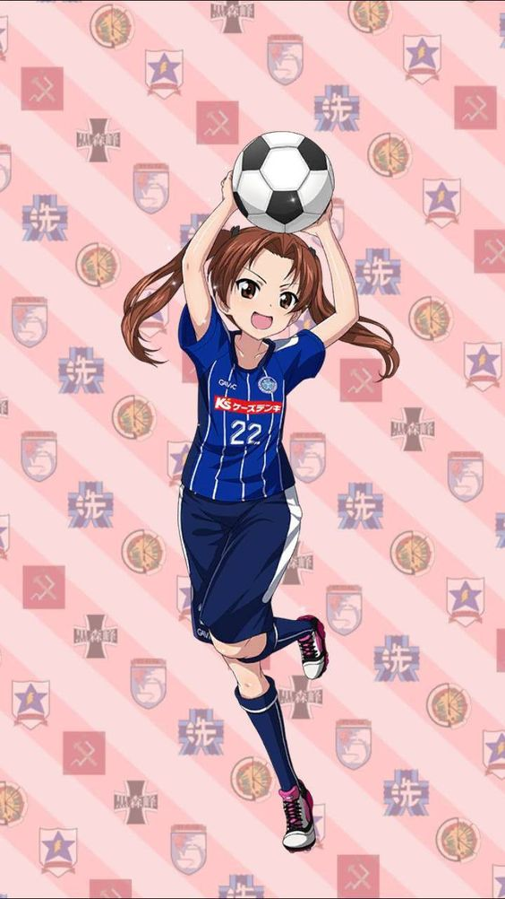
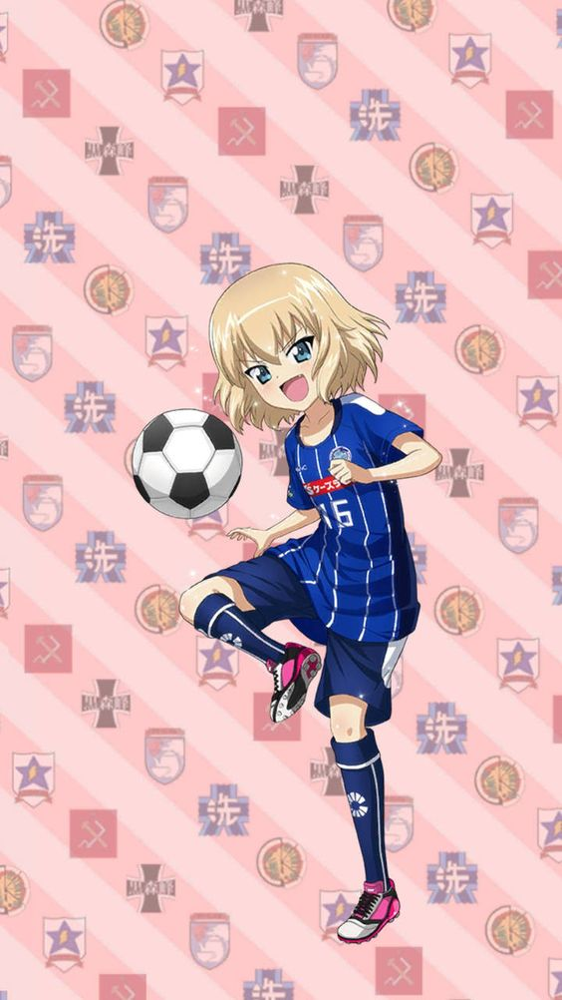
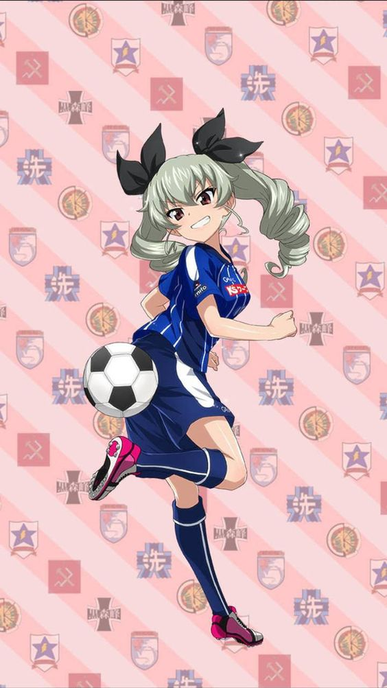
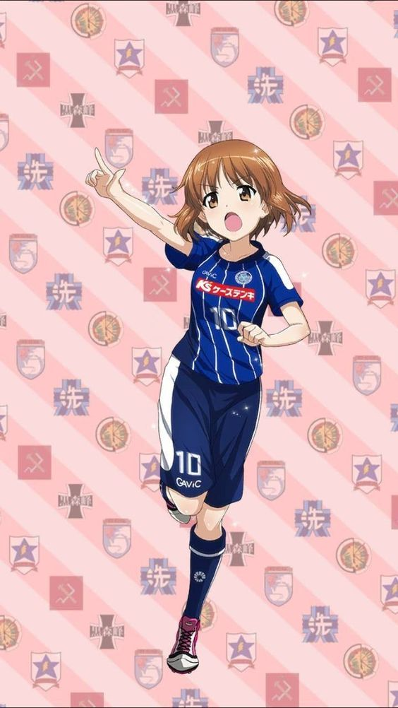

"Ningún jugador es tan bueno como todos juntos"
Alfredo Di Stéfano
"Ningún jugador es tan bueno como todos juntos"
Alfredo Di Stéfano
Pueden parecer movimientos triviales y poco esforzados para los espectadores, pero los expertos están de acuerdo en que el calentamiento antes de entrar en acción es una actividad indispensable para mejorar el rendimiento y disminuir el riesgo de lesiones. El incremento de la intensidad y de la exigencia de la competición ha motivado la creciente especialización en todos los ámbitos relacionados con el fútbol, y la preparación física es uno de los aspectos que más ha avanzado en los últimos tiempos. Los ejercicios previos a cualquier actividad física persiguen cuatro objetivos:
*elevar la temperatura corporal.
*Incrementar la actividad metabólica.
*Aumentar el ritmo cardiaco y respiratorio.
*Preparar los músculos y el sistema nervioso para el esfuerzo.
Son todas aquellas acciones que realiza y desarrolla un jugador de fútbol dominando el balón con todas las superficies de contacto que le permite el reglamento. Si es en beneficio propio se conoce como Técnica Individual, y si es en beneficio del equipo, se conoce como Técnica Colectiva.
El fútbol es un deporte muy divertido que todo el mundo puede jugar, y puede ser jugado prácticamente en cualquier lugar. Y tampoco cuesta mucho jugarlo. Esta facilidad de acceso es lo que lo convierte en el deporte más popular del mundo. Hay múltiples y diferentes beneficios de jugar al fútbol que harán que quieras jugarlo todo el día. No sólo es un deporte divertido que te permite socializarte con los demás, sino que también es fantástico para tu salud muscular, tu salud cardíaca, tu fortaleza ósea, tu estado mental y mucho más.
MEJORA LA CAPACIDAD AERÓBICA: los jugadores de fútbol tienen una tremenda cantidad de capacidad aeróbica siendo capaces de pasar de caminar a esprintar y tener una rápida recuperación para hacerlo una y otra vez, y otra vez.
MEJORA LA SALUD CARDIOVASCULAR: El constante caminar, trotar y correr ayudan a mantener el ritmo cardíaco del jugador, proporcionando un excelente ejercicio cardiovascular. Este movimiento constante ayuda a los jugadores a fortalecer sus corazones, a resistir la acumulación de placa en las arterias coronarias, a reducir su presión sanguínea y a quemar el exceso de calorías.
CONSTRUYE LA FUERZA MUSCULAR: La fuerza de la parte inferior del cuerpo es necesaria para golpear, saltar, bloquear, cambiar de ritmo y girar. También forma la base de la velocidad explosiva. La fuerza de la parte superior del cuerpo es necesaria para proteger el balón, retener a los oponentes, hacer lanzamientos y también contribuye a la potencia y la explosividad general.
AUMENTA LA FUERZA DE LOS HUESOS: Las repetidas cargas de peso en el cuerpo durante un partido de fútbol son una excelente manera de aumentar la fuerza de nuestro esqueleto. Mantener la forma física a través del fútbol durante toda la vida es una gran manera de mantener los huesos fuertes y uno de los más importantes beneficios de jugar al fútbol.
ENSEÑA COORDINACIÓN: Otro de los beneficios de jugar al fútbol es que la coordinación del cuerpo se mejora a través de los movimientos complejos como el regate, los giros y los pases, que se realizan a diferentes velocidades y direcciones. La coordinación ojo-mano mejora cuando los jugadores golpean el balón o reciben un pase de alguien.
AUMENTA LA FUNCIÓN COGNITIVA DEL CEREBRO: El fútbol ayuda a aumentar las habilidades de concentración, persistencia y autodisciplina porque es un juego rápido que requiere decisiones rápidas en el campo. Incluso cuando el ritmo parece disminuir, los jugadores buscan constantemente ventajas territoriales, tratando de posicionarse para recibir un pase o para defender un área que el oponente pueda atacar.
AUMENTA LA CONFIANZA Y LA AUTOESTIMA, Y AYUDA A REDUCIR LA ANSIEDAD: Construir la fuerza física y la resistencia ayuda a construir la confianza en un jugador tanto dentro como fuera del campo. Además, como en todas las formas de ejercicio, las endorfinas que se liberan en el cuerpo después de un partido son importantes reductores del estrés y la ansiedad. Varios estudios señalan que el ejercicio es un tratamiento muy eficaz para la depresión y la ansiedad.
REDUCE LA GRASA CORPORAL Y MEJORA EL TONO MUSCULAR: El fútbol es un gran deporte para quemar grasa porque trabaja los músculos y el corazón de diferentes maneras. El fútbol construye más masa muscular y quema más grasa al reclutar fibras musculares tanto de cambio lento como de cambio rápido.



